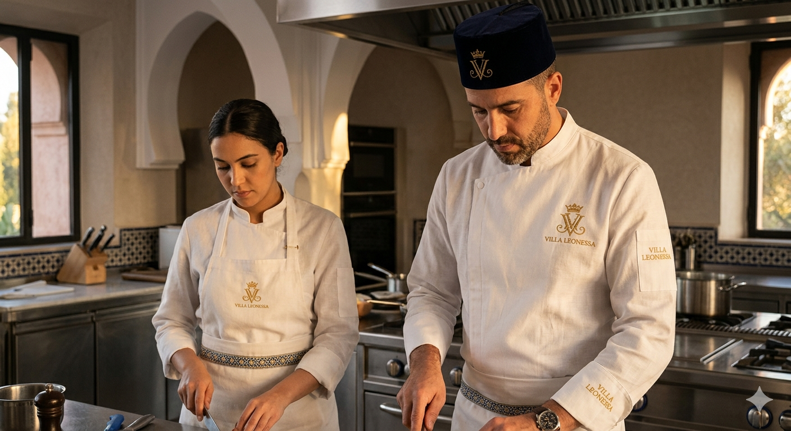
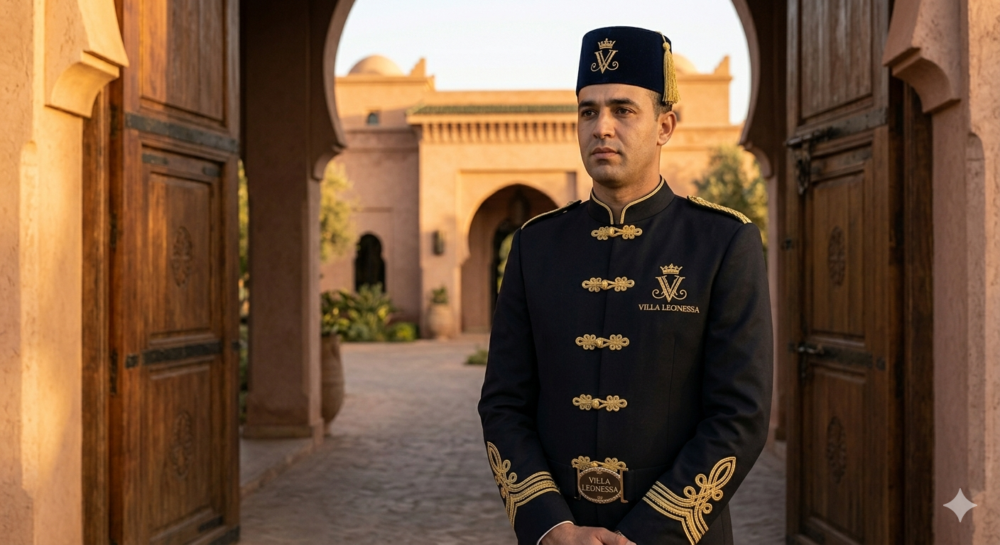
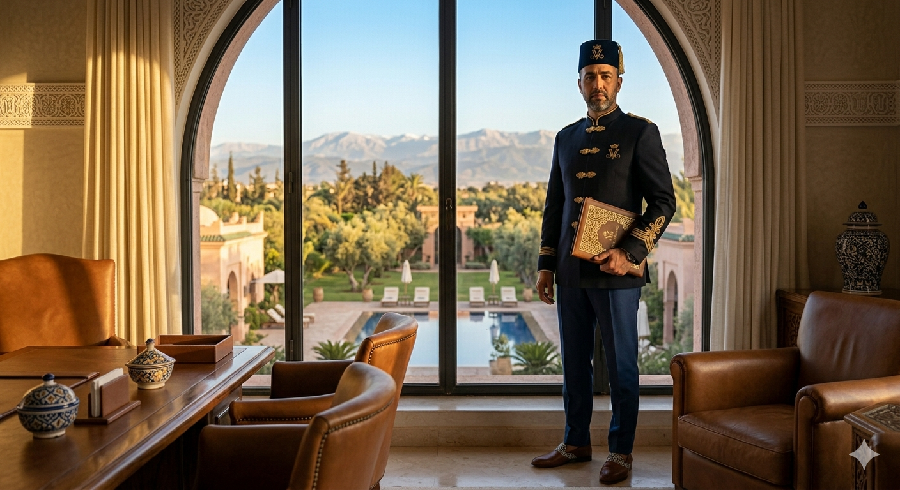
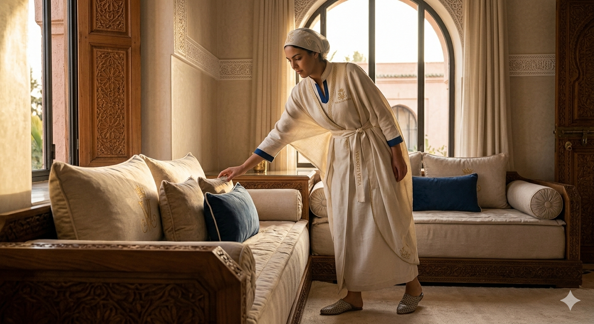
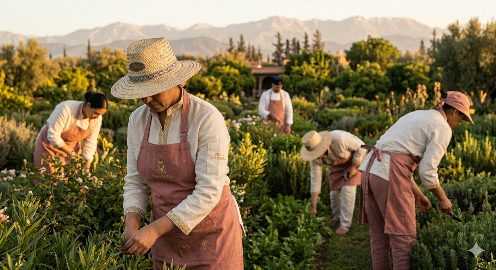
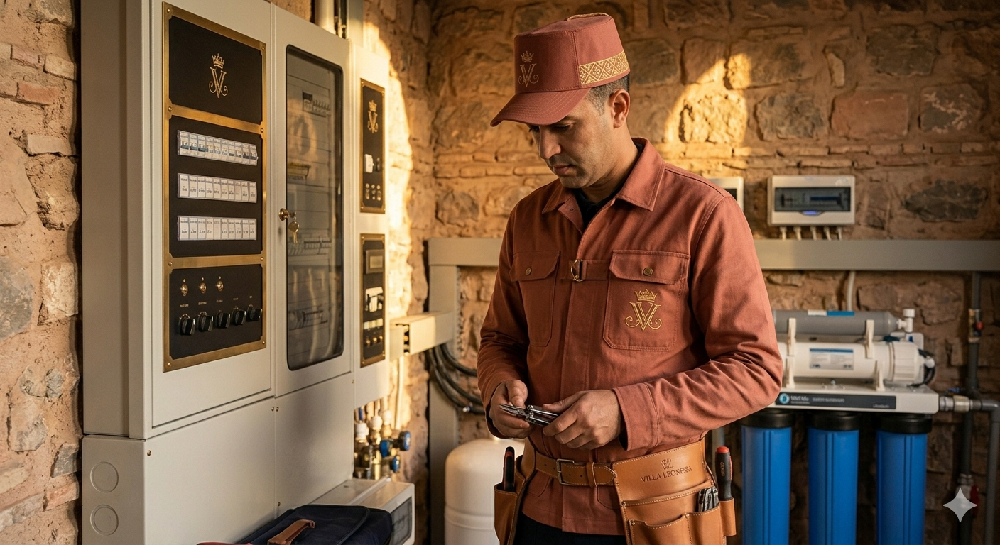

The Sartorial Identity
Bab Atlas · Marrakech
Rooted in the 11-century lineage of Prince Federico, the uniforms prioritize structure, bespoke fit, and aristocratic presence. We utilize Milanese silhouettes and fine linen-wool blends.
The local heritage is expressed through traditional embroidery (Alamari), the integration of the Fez/Tarbouch, and breathable linen fabrics suited for the Marrakech light.

The uniform features high-collar white linen with the gold crowned monogram prominently displayed on the chest.

'Leonessa Night' navy wool with traditional gold-threaded Alamari closures and a structured velvet Fez.

An Italian 'Spezzato' suit in navy and zellige blue, featuring gold thread closures instead of standard buttons.

'Ivory Parchment' linen tunics with 'Zellige Blue' accents and Selham-style draping.

Heavy cotton and linen in 'Marrakech Rose' and 'Ivory' tones with refined straw hats.

Structured utility jackets in terracotta twill with custom leather belts etched with the Villa Leonessa wordmark.
Every piece conveys belonging to an 11-century lineage, never loud but always certain.
Tactile quality—linen, silk, and velvet—designed for the unique Marrakech light.
Avoiding trend-based "luxury," focusing on silhouettes that could exist in 1920 or 2025.
| Department | Primary Color | Primary Material | Identity Mark |
|---|---|---|---|
| Leadership | Leonessa Night | Wool/Silk Blend | Gold Lapel Pin |
| Security | Leonessa Night | Structured Wool | Braided Monogram |
| Kitchen | Ivory Parchment | Breathable Linen | Chest Embroidery |
| Housekeeping | Ivory / Zellige Blue | Soft Linen | Shoulder Embroidery |
| Maintenance | Marrakech Rose | Cotton Twill | Leather Patch |